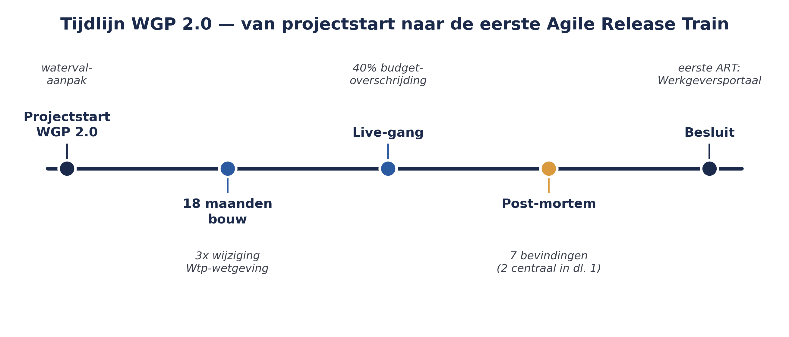

De casus: WGP 2.0
⏱ 15 minMeridiaan, de pensioenuitvoerder die door deze cursus heen als casus terugkeert, heeft twee jaar geleden geprobeerd het werkgeversportaal te vernieuwen. Het project kreeg de naam WGP 2.0. Het werd in de klassieke watervalvolgorde aangepakt: eerst een compleet vastgesteld ontwerp, dan bouwen, dan testen, dan live. Na achttien maanden en een overschrijding van veertig procent op het budget bleek het resultaat niet aan te sluiten bij wat werkgevers nodig hadden — de wetgeving rond de Wet toekomst pensioenen (Wtp) was in de tussentijd drie keer gewijzigd, en het project had geen mechanisme om dat soort verandering op te vangen.

De post-mortem van WGP 2.0 leverde zeven bevindingen op. Vijf daarvan gaan over onderwerpen die bekend zijn uit een scrum- of EA-cursus: te laat feedback ophalen, geen werkende software tot het einde, silo's tussen architectuur en bouw. Twee bevindingen zijn voor déze cursus het vertrekpunt: Meridiaan had inmiddels wél een aantal Scrum-teams die goed werkten, maar die teams voegden hun werk niet samen tot iets dat de organisatie vooruit hielp. Vijf teams die ieder voor zich goed scrummen, leverden geen samenhangend werkgeversportaal op. En de leiding van Meridiaan had geen manier om vanuit de strategie — de Wtp-transitie, de doelen van de raad van bestuur — richting te geven aan wat die vijf teams elke twee weken opleverden.
Niet "hoe laat één team goed werken", maar "hoe laat je tientallen teams werken alsof het één trein is, terwijl de organisatie in de tussentijd stuurt op strategie in plaats van op planningen die achterhaald zijn voordat ze af zijn." Dat is precies het gat dat SAFe probeert te dichten.
Uit Werkboek deel 1, Opdracht 1.4 — de post-mortem lezen als startpunt